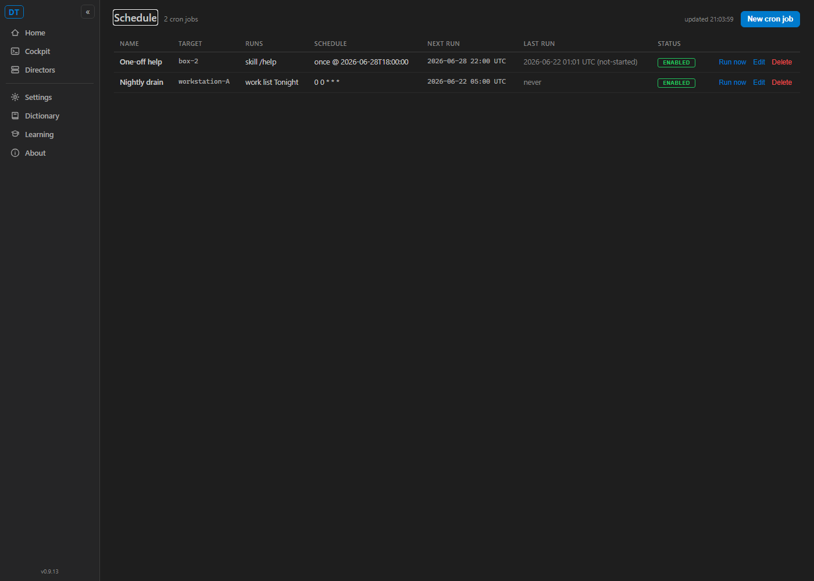

Title: Make cron first-class for agents + humans: cc-cron CLI + surface the Schedule page
PR: #626 (branch issue-621-cc-cron)
Verifier: QA Agent (independent verification - developer report and screenshots NOT trusted)
Method: own worktree from PR branch; isolated slot 13 build; a fresh headless GatewayHost
on an ephemeral loopback port with isolated temp cron stores (no Tailscale, no auth) - cc-cron driven
against that live Gateway over real HTTP. The user's production Gateway was never written to.
Per the recorded decision on flagged Assumption 1, the Schedule page is NOT graduated out of the v1
alpha flag. AC#5 is satisfied via a documented, discoverable direct-URL opt-in (/schedule).
AC#5 was verified against THIS decision: the nav item is hidden, but the page is fully reachable and
functional by direct URL, and the opt-in is documented in CC_TOOLS.md and in the NavMenu code comment.
| # | Criterion | Expected | Actual (verified) | Result |
|---|---|---|---|---|
| 1 | create one-off (issue command) returns 201 + id + nextRunUtc; cross-check GET /cron/jobs | Gateway 201; prints new id + nextRunUtc; job present in list | cc-cron create --name "QA help once" --at "2026-06-28T18:00:00" --tz America/New_York --machine workstation-A --repo D:\repo --seed "/help" -> Created, Id cj_62d32a, Next run 2026-06-28T22:00:00Z (18:00 EDT = 22:00 UTC, DST-correct). Confirmed via cc-cron list and cc-cron get. |
PASS |
| 2 | list / get / runs / run / enable / disable / delete map to the right REST call, readable output | Each subcommand maps to one REST call and renders cleanly | All exercised: list (table + --json), get (full detail), recurring create, run (POST /run -> fired, recorded a run with infraStatus not-started since no live Director resolves the target - correct), runs (history record returned), disable/enable (read-modify-write PUT toggles enabled), delete (both jobs removed, list -> []). 404 on unknown id renders "no such cron job", no trace. | PASS |
| 3 | endpoint discovery: no hard-coded port (same mechanism as other cc-* tools); clear not-reachable error | Resolves from config gateway.url; friendly error when Gateway down | Code: gateway.py resolve_base_url() reads config.gateway.url via cc_shared.config.CCDirectorConfig (the same on-disk camelCase block the desktop and Cockpit use), loopback default only when unset - no per-call port literal. Run with a dead gateway: --gateway http://127.0.0.1:19999 list -> "Gateway not reachable at ... Is the Gateway tray app running?" exit 1, no stack trace. cc-cron endpoint resolved the machine's configured Tailscale Gateway URL. |
PASS |
| 4 | invalid schedule surfaces the Gateway 400 message, not a stack trace | Gateway validation text echoed verbatim | bad cron -> Error: invalid cron expression: not-a-cron; past/garbage one-off -> Error: runAt is not a parseable timestamp: not-a-time; unknown tz -> Error: unknown timeZoneId: Mars/Olympus. All exit 1, all the Gateway's own message, no Python traceback. |
PASS |
| 5 | Schedule page reachable via documented opt-in; shows jobs/next-run/history; can create/run/delete | Page works by direct URL; nav item hidden; documented opt-in | Cockpit run against the isolated Gateway; navigated to /schedule (HTTP 200). Live render (see screenshot) shows both seeded jobs with NEXT RUN, LAST RUN (run history), STATUS, and New cron job / Run now / Edit / Delete controls. The left nav rail shows NO Schedule item - the page is reachable only via the direct-URL opt-in. Opt-in documented in docs/CC_TOOLS.md (Scheduling section) and the NavMenu.razor code comment. Page component Schedule.razor is unchanged by the PR. |
PASS |
| 6 | CC_TOOLS.md documents cc-cron; build clean | Docs present; solution builds with no errors | CC_TOOLS.md has a cc-cron table row, a full ### cc-cron section (all subcommands, endpoint discovery, error behavior), and a Scheduling section pointing humans at /schedule and agents at cc-cron. dotnet build cc-director.sln -> Build succeeded, 0 Warning(s), 0 Error(s) (Cockpit project included). cc-cron 13 unit tests pass. |
PASS |
Note the nav rail has no "Schedule" entry; the page is reachable only by direct URL.

Diff touches only: the new tools/cc-cron tool, tools/registry.json (ship entry),
NavMenu.razor (Schedule item set to display:none plus an explanatory comment - 8 lines),
docs/CC_TOOLS.md, and proof artifacts. Confirmed NO change to the cron engine, store,
CronJobDto or CronRunRecord contracts, and NO run-complete notifications
(that is sibling #622).